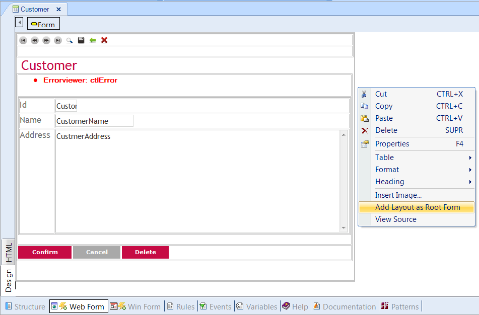
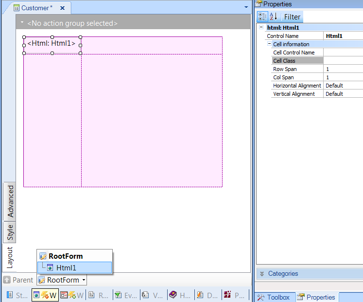
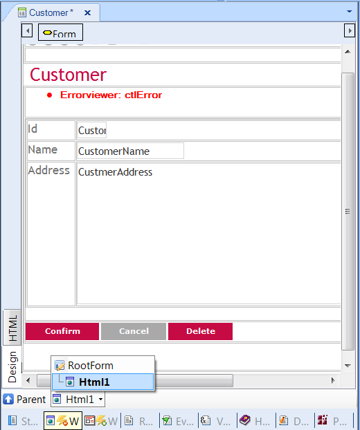

This is an option of the contextual menu of the Web Form of the HTML Editor. DescriptionIf the user needs to change the Root form to use the Web Abstract Editor, the way to do it is to create an abstract layout including an HTML container with the HTML web form. By right clicking in the Web Form - when it is not empty - there is an option in the contextual menu, called Add Layout As Root Form, as the figure shows:  As a result of executing this menu option, a Layout form is created including the HTML Container.  By double clicking on the HTML Container, you can edit the Web Form as before and visualize the resulting tree structure:  NoteIn order to convert an HTML form to an Abstract form see Convert to Abstract Layout menu option.
|